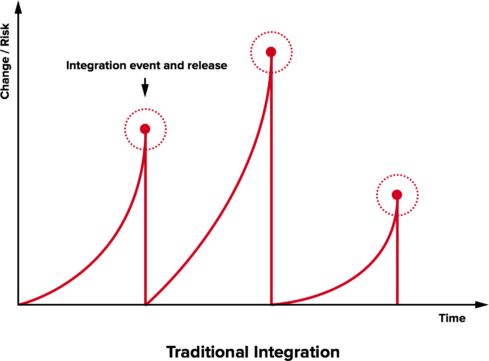

Laboratory of Software Systems
Continuous Integration
Danilo Pianini
2021-10-18Continuous Integration
The practice of integrating code with a main development line continuously
Verifying that the build remains intact
- Requires build automation to be in place
- Requires testing to be in place
- Pivot point of the DevOps practices
- Historically introduced by the extreme programming (XP) community
- Now widespread in the larger DevOps community
The Integration Hell
- Traditional software development takes several months for “integrating” a couple of years of development
- The longer there is no integrated project, the higher the risk


Microreleases and protoduction
- High frequency integration may lead to high frequency releases
- Possibly, one per commit
- Of course, versioning must be appropriate…
Traditionally, protoduction is jargon for a prototype that ends up in production

- Traditionally used with a negative meaning
- It implied software
- unfinished,
- unpolished,
- badly designed
- Very common, unfortunately
- It implied software
- This si different in a continuously integrated environment
- Incrementality is fostered
- Partial features are up to date with the mainline
Intensive operations should be elsewhere
- The build process should be rich and fast
- Operations requiring a long time should be automated
- And run somewhere else than devs' PCs

Continuous integration software
Software that promotes CI practices should:
- Provide clean environments for compilation/testing
- Provide a wide range of environments
- Matching the relevant specifications of the actual targets
- High degree of configurability
- Possibly, declarative configuration
- A notification system to alert about failures or issues
- Support for authentication and deployment to external services
Plenty of integrators on the market
Circle CI, Travis CI, Werker, done.io, Codefresh, Codeship, Bitbucket Pipelines, GitHub Actions, GitLab CI/CD Pipelines, JetBrains TeamCity…
We will use GitHub actions: GitHub integration, free for FOSS, multi-os OSs supported
(Travis CI was better designed, but it has been essentially killed for FOSS)
Core concepts
Structure operations into groups of tasks that execute either in sequence or in parallel
(not so different than Gradle tasks…)
The hierarchy an naming of each task changes with the specific product.
In Travis CI:
- builds contain stages that run sequentially
- stages contain jobs that run in parallel on separate VMs
- jobs contain phases that run sequentially
- phases are commands or sequences of commands
In GitHub Actions:
- workflows contain jobs that run in parallel on separate VMs, but can express dependencies
- jobs contain steps that run sequentially on the same VM
- steps can be either commands or sequences of commands, or application of actions
- actions can be scripts or sequences of actions
No standard architecture!
Pipeline design
In essence, designing a CI system is designing a software construction, verification, and delivery pipeline with the abstractions provided by the selected provider.
- Think of all the operations required starting from one or more blank VMs
- OS configuration
- Software installation
- Project checkout
- Compilation
- Testing
- Secrets configuration
- Delivery
- …
- Organize them in a dependency graph
- Model the graph with the provided CI tooling
Configuration can grow complex, and is usually stored in a YAML file
(but there are exceptions, JetBrains TeamCity uses a Kotlin DSL).
GitHub Actions: Configuration
Workflows are configured in YAML files located in the default branch of the repository in the .github/workflows folder.
One configuration file $\Rightarrow$ one workflow
For security reasons, workflows may need to be manually activated in the Actions tab of the GitHub web interface.
GitHub Actions: Runners
Executors of GitHub actions are called runners: virtual machines (hosted by GitHub) with the GitHub Actions runner application installed.
Note: the GitHub Actions application is open source and can be installed locally, creating “self-hosted runners”. Self-hosted and GitHub-hosted runners can work together.
Upon their creation, runners have a default environment, which depends on their operating system
Convention over configuration
Several CI systems inherit the “convention over configuration principle.
For instance, by default (with an empty configuration file) Travis CI builds a Ruby project using rake.
GitHub actions does not adhere to the principle: if left unconfigured, the runner does nothing (it does not even clone the repository locally).
Probable reason: Actions is an all-round repository automation system for GitHub, not just a “plain” CI/CD pipeline
$\Rightarrow$ It can react to many different events, not just changes to the git repository history
GHA: basic workflow structure
Minimal, simplified workflow structure:
# Mandatory workflow name
name: Workflow Name
on: # Events that trigger the workflow
jobs: # Jobs composing the workflow, each one will run on a different runner
Job-Name: # Every job must be named
# The type of runner executing the job, usually the OS
runs-on: runner-name
steps: # A list of commands, or "actions"
- # first step
- # second step
Another-Job: # This one runs in parallel with Job-Name
runs-on: '...'
steps: [ ... ]
DRY CI
We discussed that automation / integration pipelines are part of the software
- They are subject to the same (or even higher) quality standards
- All the good engineering principles apply!
YAML is often used by CI integrators as preferred configuration language as it enables some form of DRY:
- Anchors (
&/*) - Merge keys (
<<:)
hey: &ref
look: at
me: [ "I'm", 'dancing' ]
merged:
foo: *ref
<<: *ref
look: to
Same as:
hey: { look: at, me: [ "I'm", 'dancing' ] }
merged: { foo: { look: at, me: [ "I'm", 'dancing' ] }, look: to, me: [ "I'm", 'dancing' ] }
GitHub Actions' actions
GHA’s YAML parser does not support standard YAML anchors and merge keys
(it is a well-known limit with a bug open since ages)
GHA achieves reuse via “actions": reusable blocks of operations
- Three kinds:
- JavaScript (working on any OS)
- Docker container-based (linux only)
- Composite (assemblage of other actions)
- Allow input and output parameters
Many basic actions are provided by GitHub directly, and many are developed by the community.
Workflow minimal example
# This is a basic workflow to help you get started with Actions
name: CI
# Controls when the workflow will run
on:
push:
tags: '*'
branches-ignore: # Pushes on these branches won't start a build
- 'autodelivery**'
- 'bump-**'
- 'renovate/**'
paths-ignore: # Pushes that change only these file won't start the workflow
- 'README.md'
- 'CHANGELOG.md'
- 'LICENSE'
pull_request:
branches: # Only pull requests based on these branches will start the workflow
- master
# Allows you to run this workflow manually from the Actions tab
workflow_dispatch:Workflow minimal example
# A workflow run is made up of one or more jobs that can run sequentially or in parallel
jobs:
# This workflow contains a single job called "build"
Default-Example:
# The type of runner that the job will run on
runs-on: macos-latest
# Steps represent a sequence of tasks that will be executed as part of the job
steps:
# Checks-out your repository under $GITHUB_WORKSPACE, so your job can access it
- uses: actions/checkout@v2
# Runs a single command using the runners shell
- name: Run a one-line script
run: echo Hello from a ${{ runner.os }} machine!
# Runs a set of commands using the runners shell
- name: Run a multi-line script
run: |
echo Add other actions to build,
echo test, and deploy your project. Workflow minimal example
Explore-GitHub-Actions:
runs-on: ubuntu-latest
steps:
- run: echo "🎉 The job was automatically triggered by a ${{ github.event_name }} event."
- run: echo "🐧 This job is now running on a ${{ runner.os }} server hosted by GitHub!"
- run: echo "🔎 The name of your branch is ${{ github.ref }} and your repository is ${{ github.repository }}."
- name: Check out repository code
uses: actions/checkout@v2
- run: echo "💡 The ${{ github.repository }} repository has been cloned to the runner."
- run: echo "🖥️ The workflow is now ready to test your code on the runner."
- name: List files in the repository
run: ls ${{ github.workspace }}
- run: echo "🍏 This job's status is ${{ job.status }}."
# Steps can be executed conditionally
- name: Skipped conditional step
if: runner.os == 'Windows'
run: echo this step won't run, it has been excluded!
- run: |
echo This is
echo a multi-line
echo script. Workflow minimal example
Conclusion:
runs-on: windows-latest
# Jobs may require other jobs
needs: [ Default-Example, Explore-GitHub-Actions ]
# Typically, steps that follow failed steps won't execute.
# However, this behavior can be changed by using the built-in function "always()"
if: always()
steps:
- name: Run something on powershell
run: echo By default, ${{ runner.os }} runners execute with powershell
- name: Run something on bash
shell: bash
run: echo However, it is allowed to force the shell type and there is a bash available for ${{ runner.os }} too.
Checking out the repository
By default, GitHub actions' runners do not check out the repository
- Actions may not need to access the code
- e.g., Actions automating issues, projects
It is a common and non-trivial operation (the checked out version must be the version originating the workflow), thus GitHub provides an action:
- name: Check out repository code
uses: actions/checkout@v2Since actions typically do not need the entire history of the project, by default the action checks out only the commit that originated the workflow (--depth=1 when cloning)
- Shallow cloning has better performance
- $\Rightarrow$ It may break operations that rely on the entire history!
- e.g., the git-sensitive semantic versioning system
Also, tags don’t get checked out
Checking out the whole history
- name: Checkout
uses: actions/checkout@v2
with:
fetch-depth: 0
submodules: recursive
- name: Fetch tags
shell: bash
run: git fetch --tags -f
DRY with composite actions
Composite actions allow the execution of multiple steps.
They can be written by simply creating an action.yml file in the project root
name: 'Checkout the whole repository'
description: 'Checkout all commits, all tags, and initialize all submodules.'
runs:
using: "composite"
steps:
- name: Checkout
uses: actions/checkout@v2
with:
fetch-depth: 0
submodules: recursive
- name: Fetch tags
shell: bash
run: git fetch --tags -f
See: https://github.com/DanySK/action-checkout
It can be used as:
steps:
# Checkout the repositoryTravis CI: Testing on different OSs
If our software supports multiple operating systems, it is a good practice to verify that changes do not break compatibility
A few integrators allow to perform a multi-os build. In Travis it is possible via the os key, supporting:
linux– A Ubuntu Linux installationmacos– A MacOS X installationwindows– A Windows Server installation
Specifying multiple operating systems causes the execution of multiple jobs in the same build
Note: Some languages or system configurations may be unavailable for some environments!
- e.g., there is no
javaenvironment available onwindows
Custom environment
If a particular environment of need is unavailable, one solution is
build it yourself
- start from
language: minimal - if the software you need is installable via apt or homebrew, use the
addonskeyword:
addons:
apt:
packages: foo
homebrew:
packages: bar
- install packages under windows using chocolatey (pre installed on Travis Windows instances)
- if you need to perform a manual installation, you can write it in bash
Improved resilience on Travis
- operations that may fail due to network issues or long time can be worked around using Travis built in functions:
travis_retry COMMANDtries the sameCOMMANDthree times, giving up only if it fails for three timestravis_wait N COMMANDallowsCOMMANDto run without any output for longer than the default 10 minutes.- The hard limit on 50 minutes per job however remains
A Java custom environment
It could be useful to test on specific versions of the JDK, for instance.
A multi platform installer exists: Jabba
Also, a Travis-CI dedicated tool has been written to ease installation via Travis: Gravis-CI
- Automatically installs Jabba
- Uses Jabba to install the version of the JDK specified in the
JDKenvironment variable
env:
global:
- GRAVIS_REPO="https://github.com/DanySK/Gravis-CI.git" # Convenience variable for shortening commands
- GRAVIS="$HOME/gravis" # Convenience variable for shortening commands
- JDK="adopt@1.11.0-8" # Partial versions supported, adopt@1.11 would pull the latest adopt 1.11
before_install:
- travis_retry git clone --depth 1 $GRAVIS_REPO $GRAVIS # Check out the script set
- source $GRAVIS/install-jdk # Install the JDK you configured in the $JDK environment variable
Build Matrix
Similarly to the operating systems, other environment features may need to get tested, e.g. the JDK versions
Travis automatically combines some variables into a build matrix
- Generates one job for each combination of such variable
- Expands
os, custom language keys (such asrvmorpython), andenv.matrixkeys jobs.includecan be used to add further jobs to the matrixjobs.excludecan be used to filter jobs out of the matrix
...
env:
global:
...
matrix:
- JDK="adopt@"
- JDK="adopt@1.11"
- JDK="adopt-openj9@"
- JDK="adopt-openj9@1.11"
jobs:
include: # Add a job with default OS and the specified matrix environment
env:
- JDK="adopt@1.8"
exclude: # Excludes builds with OSX and OpenJ9
- { os: osx, env: [ JDK="adopt-openj9@" ] } # JSON-like syntax, YAML is a superset of JSON
- { os: osx, env: [ JDK="adopt-openj9@1.11" ] }
Build Stages and workspaces
Spanning several jobs upfront may make the build very slow
- A single mistake will be detected only after all jobs failed
- In case of limited resources, it can take a long time
- Most errors will affect all builds
Build stages allow to group one or more jobs that are to be run in parallel
- By default, all jobs run the
teststage - Jobs from a stage can communicate with jobs on another stage via workspaces
Consider for instance this structure:
- Run a build on the reference environment
- If successul, then test on all the supported configurations
- If everything is successful, then deploy
this can be mapped into a three-stages configuration
Travis YAML validation
-
Builds can get complex
-
The corrisponding YAML file can get rich
-
Syntax errors are possible and likely
-
Use anchors and merge keys to foster reuse
-
Validate YAML before pushing
- Travis CI provides a Ruby tool for this!
Using travis from the local terminal
- Installation:
gem install travis- Make sure you have the Gem install folder in your
PATH
- Make sure you have the Gem install folder in your
- Run
travis lintto verify if your YAML file complies
Private data and continuous integration
We would like the CI to be able to
- Sign our artifacts
- Delivery/Deploy our artifacts on remote targets
Both operations require private information to be shared
Of course, private data can’t be shared
- Attackers may steal the identity
- Attackers may compromise deployments
- In case of open projects, attackers may exploit pull requests!
- Fork your project (which has e.g. a secret environment variable)
- Print the value of the secret (e.g. with
printenv)
How to share a secret with the build environment?
Sharing a secret
Travis supports the insertion of secret variables in two ways:
- From the web interface (easier, quicker)
- More options $\Rightarrow$ Settings $\Rightarrow$ Environment variables
- From the command line (more compleicated)
travis encrypt <String to encrypt> --pro- e.g.,
travis encrypt 'PASSWORD="foobar"'
- e.g.,
- produces a
secure: <code>entry that can be pasted in.travis.yml- e.g.:
env:
global:
secure: <code>
Travis also supports sharing a single secret file
- It gets encrypted using
travis encrypt-file <file> --pro - The output command must be included in
.travis.yml- e.g. in the
before_installphase of any job requiring it
- e.g. in the
- The resulting encrypted file must be tracked
- Be careful not to track the original one!
Shared secrets: best practices
- Leverage the single shared file for sharing an ASCII-armored PGP key
- Allows for signing artifacts
- Signing keys are large and cannot fit a variable
- Obtain it with
gpg --armor --export-secret-keys > secrets.asc - Encrypt with
travis encrypt-file secrets.asc --pro - Remove it (
rm secrets.asc) - Track the encrypted file
git add secrets.asc.enc - In the
installorbefore_installphase:- Add the
opensslcommand printed by travis in thebefore_installphase - Add
export ORG_GRADLE_PROJECT_signingKey=$(cat secrets.asc)
- Add the
- In case you need multiple files:
- create an archive, encrypt it, decrypt on the build server, and unpack there
- Store passwords into encrypted variables
- Secrets are only available in builds launched from the original repository
- Otherwise there’d be no protection from pull request attacks
- Make sure pull requests can build without secrets!
- e.g. by excluding phases or jobs that use secrets
Signing using in-memory keys in Gradle
if (System.getenv("CI") == true.toString()) {
signing {
val signingKey: String? by project
val signingPassword: String? by project
useInMemoryPgpKeys(signingKey, signingPassword)
}
}
- The
CIenvironment variable is automatically set to true on Travis CI - The
signingKeyandsigningPasswordproperties must get passed to Gradle- The best way is probably by exporting them as environment variables
- Gradle auto-imports properties named
ORG_GRADLE_PROJECT_<variableName> - This mechanism can be exploited to inject properties using environment variables:
export ORG_GRADLE_PROJECT_signingKey=$(cat secrets.asc)- A secret variable named
ORG_GRADLE_PROJECT_signingPasswordfrom the web UI
Conditional jobs, stages, and deployments
One way to prevent pull requests to run deployment phases that would fail
(due to unavailability of secrets)
is to use conditional jobs, stages, and deployments
To do so, the keyword if can be used:
- On the whole build, to skip it entirely
- On a
stagesentry, to skip a single stage - On a
jobs.includeentry, to exclude that job
The Travis condition syntax is documented at https://docs.travis-ci.com/user/conditions-v1
Travis CI’s deploy
The deploy phase is special in Travis:
- It does not allow to run custom commands
- It expects entries with:
- A deploy provider
- A configuration
Full reference: https://docs.travis-ci.com/user/deployment-v2
Example:
deploy:
provider: releases # Deploys on GitHub Releases
file: build/libs/*.jar # Files to deploy
edge: true # opt in to the new deploy API
on: # filter
all_branches: true
# tags: true # deploy only tags
Stale builds
- Stuff works
- Nobody touches it for months
- Untouched stuff is now borked!
Ever happenend?
- Connected to the issue of build reproducibility
- The default configuration of Travis CI may change
- By the way, explicitly using
distfor Linux builds may help
- By the way, explicitly using
- Some tools may become unavailable
- Some dependencies may get unavailable
The sooner the issue is known, the better
$\Rightarrow$ Automatically run the build every some time even if nobody touches the project
- How often? Depends on the project…
Additional checks and reportings
There exist a number of recommended services that provide additional QA and reports.
Non exhaustive list:
- Codecov.io
- Code coverage
- Supports Jacoco XML reports
- Nice data reporting system
- Sonarcloud
- Multiple measures, covering reliability, security, maintainability, duplication, complexity…
- Codacy
- Automated software QA for several languages
- Code Factor
- Automated software QA
High quality FLOSS checklist
The Linux Foundation Core Infrastructure Initiative created a checklist for high quality FLOSS.
CII Best Practices Badge Program https://bestpractices.coreinfrastructure.org/en
- Self-certification: no need for bureaucracy
- Provides a nice TODO list for a high quality product
- Releases a badge that can be added e.g. to the project homepage